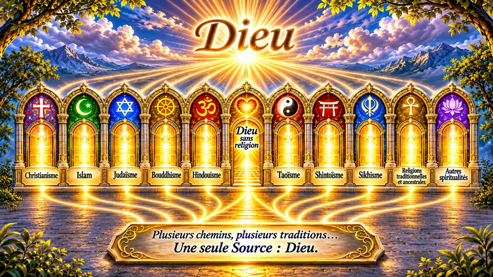

Agaphos
Unis par l’amour, guidés par la lumière.
« Unissons-nous pour une même cause : faire briller la lumière en chacun de nous, avec l’aide de Dieu. »

Plusieurs chemins, plusieurs traditions… Une seule Source : Dieu. Ouvert à toutes les traditions et aux personnes sans religion.
Unir
Le Temple de Dieu — foyer spirituel francophone. Écouter, partager, se reconnaître sans imposer une croyance.
PilierÉclairer
Bibliothèque spirituelle : réflexions sur la foi, l’amour, la connaissance de soi et l’entraide. Gratuit, sans compte.
PilierAgir
Solidarité concrète — annuaire d’entraide et actions (à venir). La lumière se vit aussi dans le geste.
Les 12 Lumières
Charte d’Agaphos : des valeurs à cultiver, pas un dogme. Elles guident la communauté et les échanges.
Connexion divine
Un moment simple pour se recueillir — sans technique imposée.